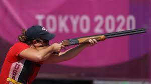

El tiro en los Juegos Olímpicos de Tokio 2020 se realizó en el Campo de Tiro de Asaka, ubicado en la localidad homónima, al noroeste de Tokio, del 24 de julio al 2 de agosto de 2021. En total fueron disputadas en este deporte 15 pruebas diferentes, 6 masculinas, 6 femeninas y 3 mixtas, repartidas en las dos especialidades de este deporte: 10 en tiro de precisión y 5 en tiro al plato. El programa de competiciones se modificó en relación a la edición anterior, tres pruebas masculinas fueron eliminadas, rifle en posición tendida 50 m, pistola 50 m y doble foso, y se crearon tres nuevas pruebas mixtas por equipos: pistola 10 m, rifle 10 m y foso

